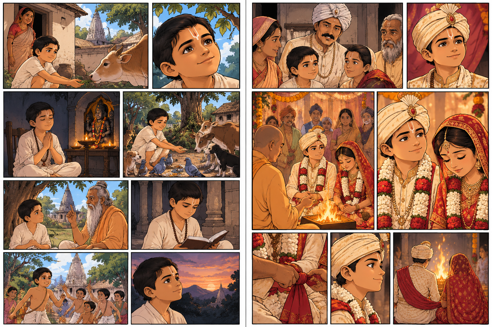

SHRI NEEM KAROLI BABA JI
SCROLL DOWN TO OPEN
BEGINNING
THE SACRED AWAKENING & EARLY CALLING

Click on image to enlarge , and then click on sound button below to make visuals narrate the scene
ASCETIC LIFE THE WANDERER
THE WANDERER'S SEARCH FOR TRUTH

Click on image to enlarge , and then click on sound button below to make visuals narrate the scene
REUNION WITH HIS FATHER
A TOUCHING RETURN ON THE SACRED GANGA

Click on image to enlarge , and then click on sound button below to make visuals narrate the scene
MIDDLE LIFE
TOTAL RENUNCIATION & DEVOTION TO SERVICE

Click on image to enlarge , and then click on sound button below to make visuals narrate the scene
WORK OF GOD BY THE MAN OF GOD
COMPASSION & A PROMISE FULFILLED

Click on image to enlarge , and then click on sound button below to make visuals narrate the scene
THE TRAIN INCIDENT SCENE 1
THE MYSTERIOUS HALT AT FARRUKHABAD

Click on image to enlarge , and then click on sound button below to make visuals narrate the scene
TRAIN INCIDENT SCENE 2
DIVINE REVELATION & THE POWER OF HUMILITY

Click on image to enlarge , and then click on sound button below to make visuals narrate the scene
OTHER MIRACLE REAL
HEALING PAIN & TRANSFORMATION OF WATER

Click on image to enlarge , and then click on sound button below to make visuals narrate the scene
TEMPLE FIRE
DIVINE PROTECTION OVER KAINCHI DHAM

Click on image to enlarge , and then click on sound button below to make visuals narrate the scene
FLOOD 1
RAGING WATERS & UNTOUCHED SERENITY

Click on image to enlarge , and then click on sound button below to make visuals narrate the scene
FLOOD 2
SAVING THE ASHRAM THROUGH DIVINE GRACE

Click on image to enlarge , and then click on sound button below to make visuals narrate the scene
DA BEGINNING
AN ETERNAL HORIZON OF FAITH & DEVOTION

Click on image to enlarge , and then click on sound button below to make visuals narrate the scene
SHRI NEEM KAROLI BABA JI
LOVE ALL • SERVE ALL • REMEMBER GOD